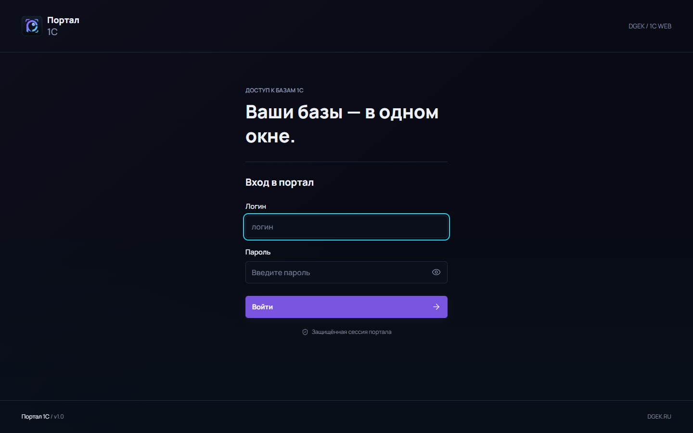
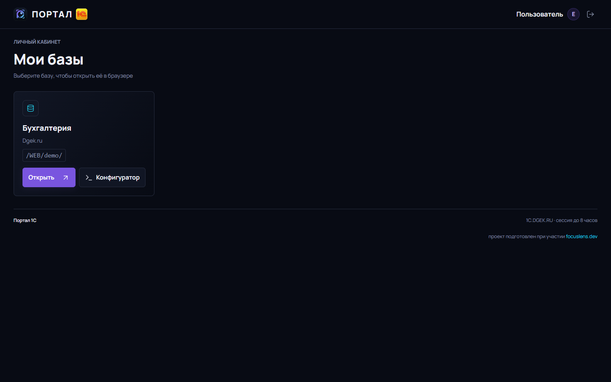
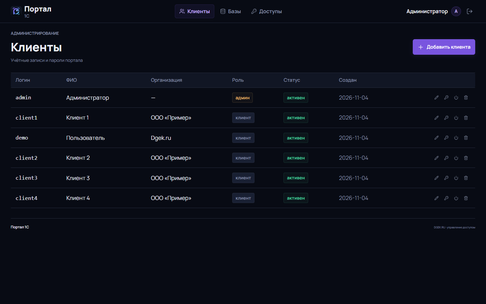
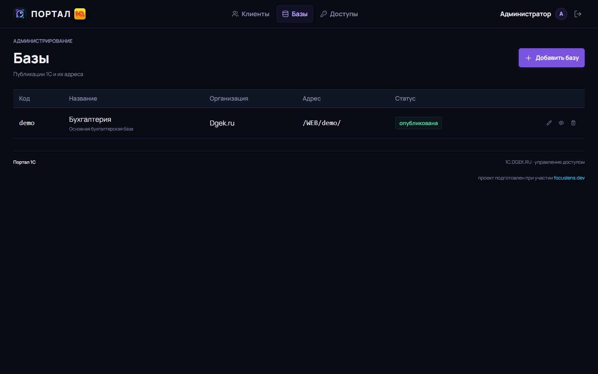
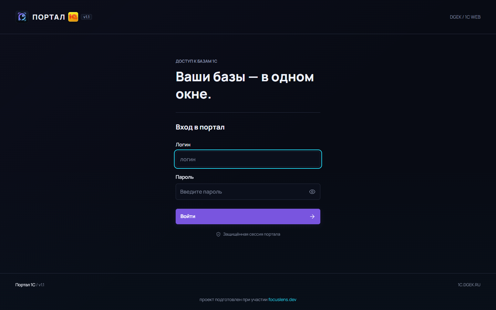
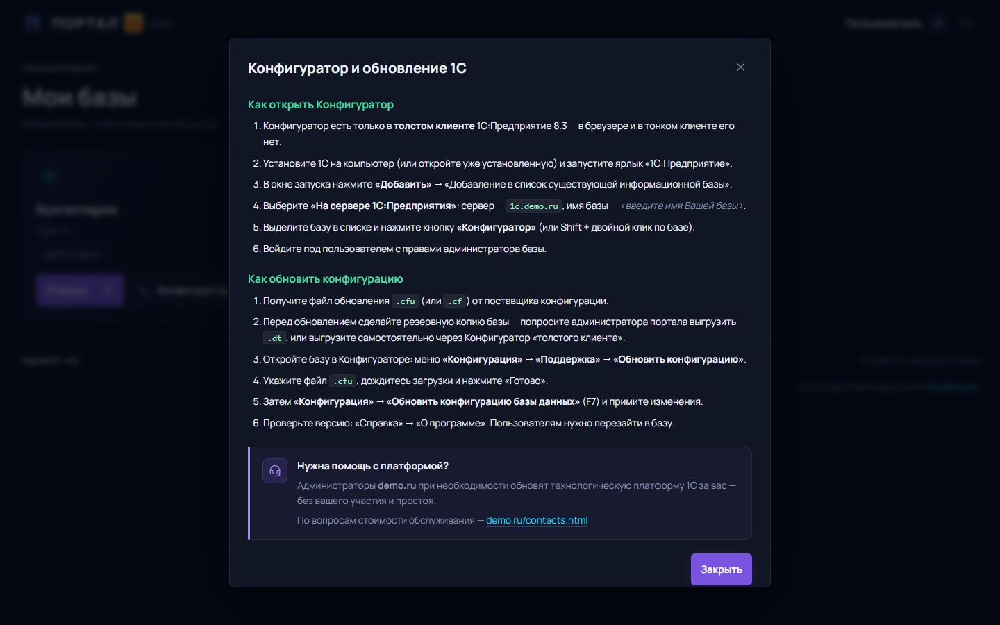

Единая точка входа в базы 1С: клиент видит только свои базы и открывает их одним нажатием, администратор управляет клиентами, базами и доступами из одной панели.
Тонкая прослойка между пользователем и кластером 1С — без дублирования учёта и без доступа к данным.
Скриншоты с рабочего стенда.






Всё, что используется в реализации.
| Слой | Технологии |
|---|---|
| Бэкенд | Python 3.12, Flask 3, Jinja2, werkzeug.security |
| Хранение | SQLite (WAL), таблицы users, bases, access, audit |
| Отдача | gunicorn (WSGI), Apache 2.4 + mod_proxy, модуль 1CWS для публикаций |
| Фронтенд | HTML5, CSS3 (Grid/Flex, custom properties), JavaScript ES2017 без фреймворков |
| Оформление | Lucide (SVG-иконки), Manrope (woff2) — локально, без CDN |
| Эксплуатация | systemd, bash, dpkg/apt, webinst (1С), PostgreSQL для самих баз 1С |
Что сделано на сегодняшний день.
1c-portal.service, редиректы на /WEB/<база>/.ras.127.0.0.1:8081 и открываются только через портал после входа.Ubuntu 22.04 / 24.04, один сервер.
git clone <repo> 1CSmallControl
cd 1CSmallControl
sudo PORTAL_SERVER_NAME=portal.example.ru \
PORTAL_ADMIN_PASSWORD='<надёжный пароль>' \
./deploy.sh
# публикация баз 1С под /WEB/<slug>/
sudo IC_HOST=1c.example.ru ./republish-web.sh dgek.dt в кластер не реализован: пакетный режим клиента 1С
на Linux в headless-окружении не запускается. База создаётся скриптом
1c-prepare-base.sh, данные загружаются из Конфигуратора
(«Администрирование → Загрузить информационную базу»).